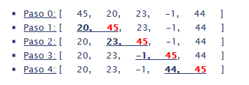
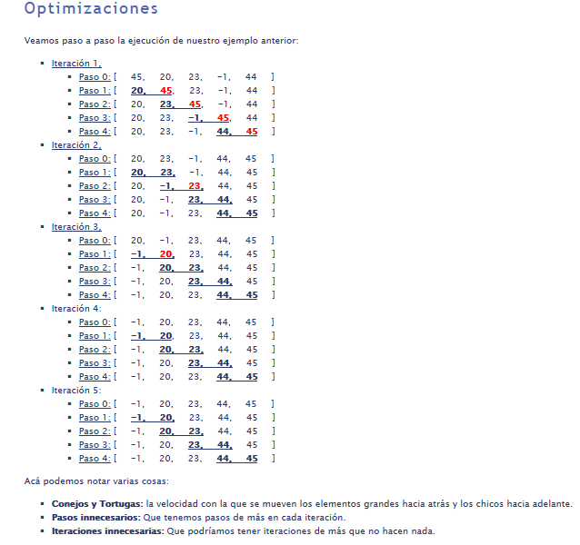
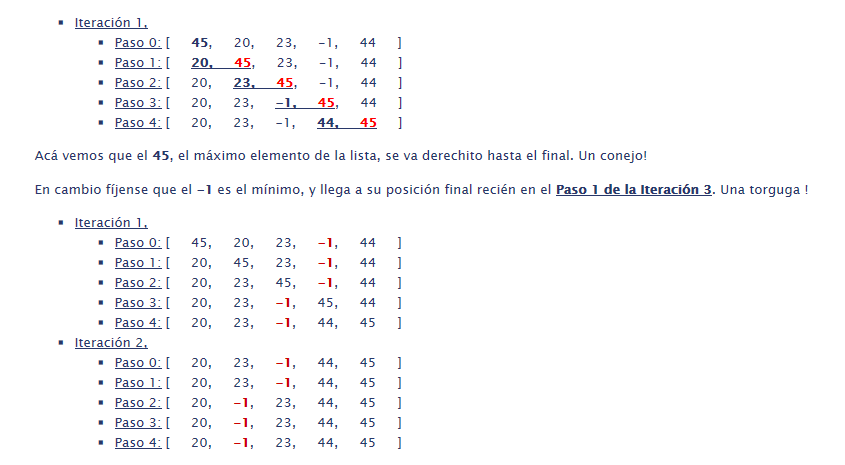
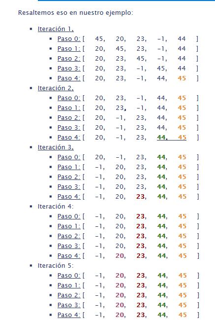
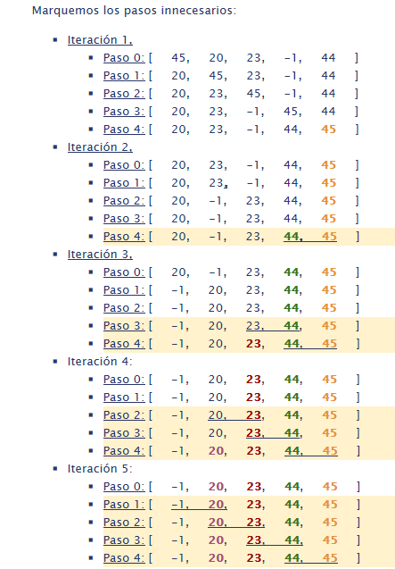

El algoritmo de ordenamiento por burbujeo (o bubblesort) es un algoritmo "simple" de ordenamiento. La idea es que se van a comparar pares consecutivos de elementos, y en caso en que estén desordenados, es decir que el primer elemento (izquierda) sea mayor al segundo (derecha), se hará un intercambio de posiciones.
Ejemplo bien simple para una lista de dos elementos:
Ej1: [ 20, 45 ] -> [ 20, 45 ]
Ej2: [ 45, 20 ] -> [ 20, 45 ]
Vamos a llegar de a poco a la solución final del algoritmo, vamos por partes.
Entonces, si tenemos que comparar cada elemento con el siguiente, podríamos pensar que el algoritmo es:
Iterar cada elemento de la lista (hasta el anteúltimo), e ir comparándolo con el siguiente.
Cambiarlos de posiciones si están desordenados
Por qué sucede este comportamiento ?
Fácil, porque nuestro algoritmo va recorriendo desde principio hacia el fin de la lista, y va de alguna forma desplazando el mayor (entre comparar pares), hacia atrás. Entonces cuando agarra el máximo lo va a ir deplazándo complétamente hacia la derecha (atrás) dónde va a terminar para el final de la iteración.


En cambio no se garantiza que el mínimo haya quedado en la izquierda, porque cuando lo encontramos, no sabemos que es el mínimo, solo sabemos que es menor que el anterior, por lo que le cambiamos el lugar. Así que a lo sumo en una iteración se mueve 1 posición hacia la izquierda

Es importante entender esto para el siguiente punto.
Pasos Innecesarios: Acotando Pasos en Iteraciones
Vimos entonces que los conejos (elementos más grandes) van hacia el final muy rápidamente porque ese es el sentido de iteración ! Hacía el fondo. (Podríamos probar una implementación inversa que vaya desde el fin hacia el principio moviendo los más chicos hacia el principio. Sería lo mismo)
Entonces, podemos saber que:
En la primer iteración el máximo elemento va a terminar último
En la segunda iteración, el anterior al máximo va a terminar en el anteúltimo ... (etc)
A saber: Iteración N => asegura que el elemento en la posición (tamaño - N) estará bien ordenado.
Como vemos en cada iteración se requiere un paso menos. De hecho la Iteración 5 no tiene sentido porque ninguno de sus pasos haría un reordenamiento, ya que todo está ordenado.Entonces si los elementos se van ubicando desde el final hacia el principio podemos pensar como que cada iteración solo debe trabajar con una "sublista", desde el principio hasta N.Ejemplo:
Fíjense:
Nro Elementos "N" = 5
Iteraciones: N - 1
Pasos Iteracion(i) = N - i
Iteración 1 = 4 pasos (comparaciones)
Iteración 2 = 3
Iteración 3 = 2
Iteración 4 = 1
Entonces ya podemos repensar nuestra implementación:
N - i veces hacer con indice "j"
comparar y ordenar lista[j] , lista[j+1]
Leyenda:
En rojo los elementos que se movieron a la derecha
Subrayados los pares que se compararon en dicho paso.
Con diferentes colores los pasos de cada iteración.
Iteraciones Innecesarias: Atajo para acotar Iteraciones
Todavía podemos realizar una optimización más.
Veamos el ejemplo anterior. Cuántos movimientos se hicieron por iteración:
Iteración 0: 6
Iteracion 1: 4
Iteracion 2: 2
Iteracion 3: 2
Iteracion 4: 1
Iteracion 5: 0
Iteracion 6: 0
Iteracion 7: 0

Quiere decir que se recorrió toda la lista (en realidad solo hasta el elemento 4 porque lo que sigue ya estará con los valores máximos, comparando, y no hubo ningún elemento que fuera mayor al siguiente. Esto quiere decir que esa "sublista" ya está ordenada de menor a mayor !!
Con lo cual, una vez que una iteración no realizar ningún movimiento, no hay forma de que las siguientes tenga que modificar algo. Con lo cual no tiene sentido seguir ejecutando. Esto nos dá pié a realizar una nueva mejora para cortar la ejecución antes.

Hasta ahora veníamos trabajando con todas versiones secuenciales, es decir que iteraban con ciclos. Sin embargo como ya vimos hay un patrón en las iteraciones. Podiamos ver cada iteración como el procesamiento de una sublista, ya que la iteración anterior se ocupó de "burbujear" el elemento más grande a la última posición. Definamos entonces una versión recursiva:
Caso Base: bubbleSort de una lista de un elemento, retorna esa misma lista
Regla Recursiva:
Realizar un burbujeo:
es decir recorrer la lista comparando elemento con el siguiente y cambiándo las posiciones.
Esto asegura que el elemento al final de la lista será ahora el mayor
Ordenar recursivamente la lista resultado del burbujeo, sin el último elemento
Retornar el resultado de la llamada recursiva concatenado con el último elemento de la nuestra
Versión original (segunda que vimos) con N iteraciones, con N Pasos: O(n2)
Ej: bubbleSort(5) => 25
Versión con la optimización de recortar pasos: O( (n2 - n) / 2)
Ej: bubbleSort(5) => 25 - 5 / 2 => 10
Esto se lee porque:
n2 daría todas las iteraciones con todos los pasos.
como no hacemos la última iteración se resta un n (5 pasos)
Pero en promedio cada iteración tendrá la mitad de pasos, porque la primera tiene N (5 pasos), mientras que la última tiene solo 1. Entonces es lo mismo que decir, la mitad.